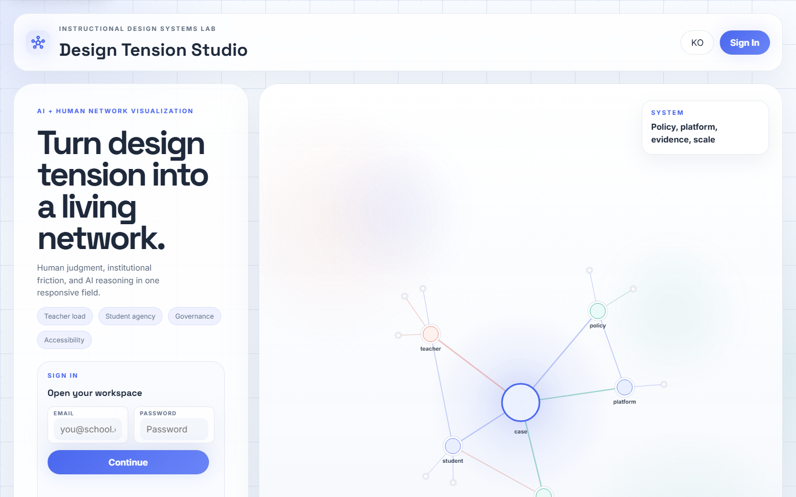
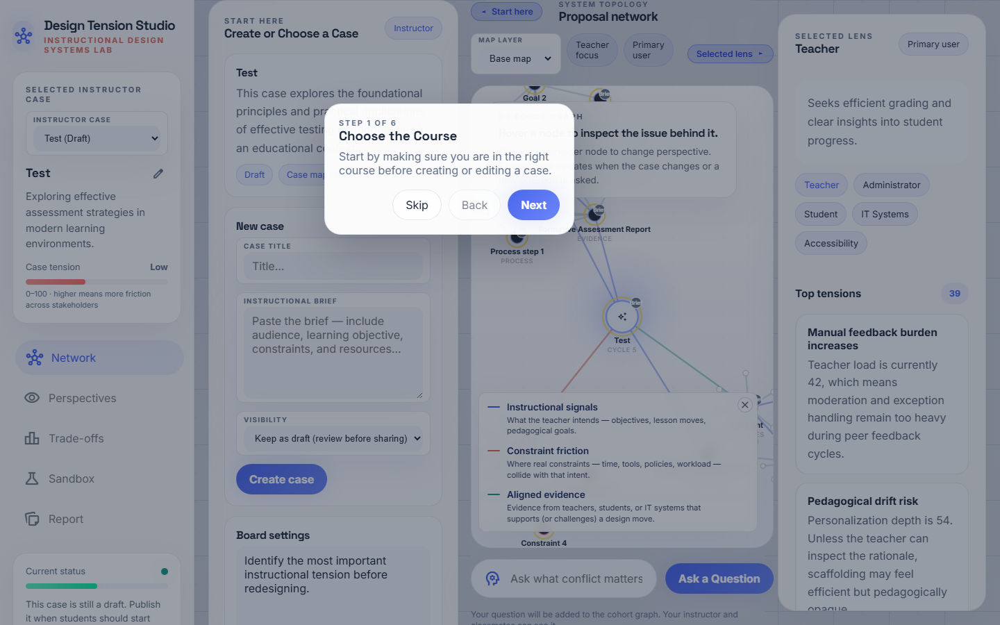
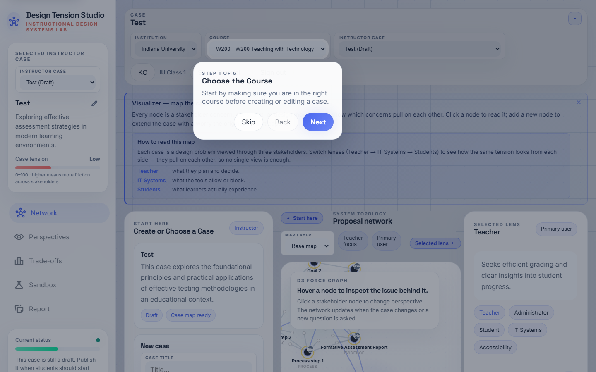
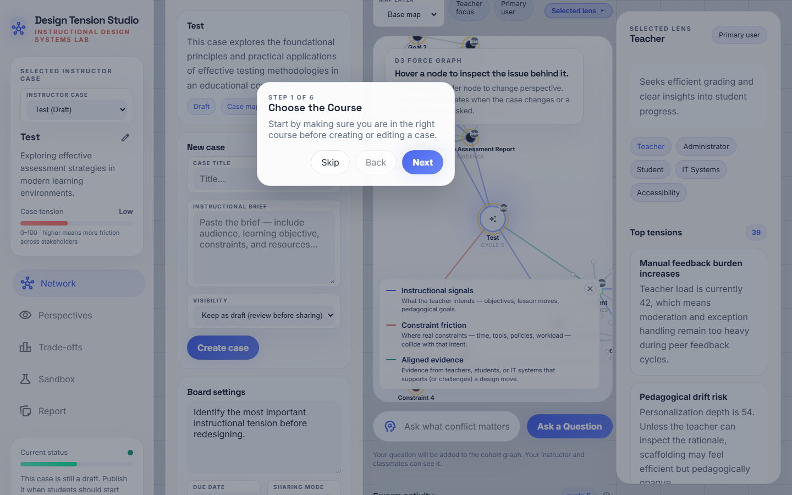
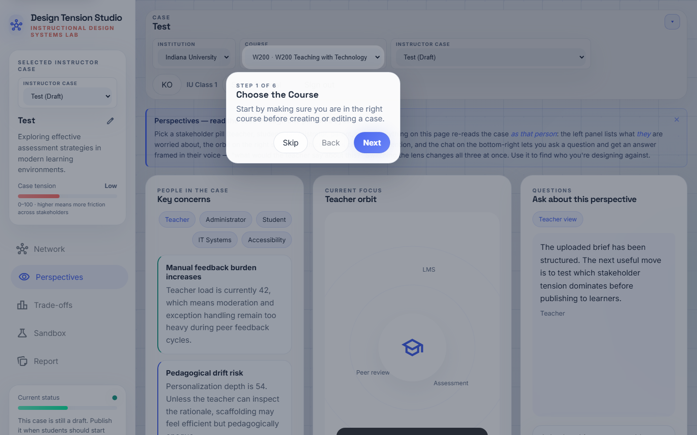
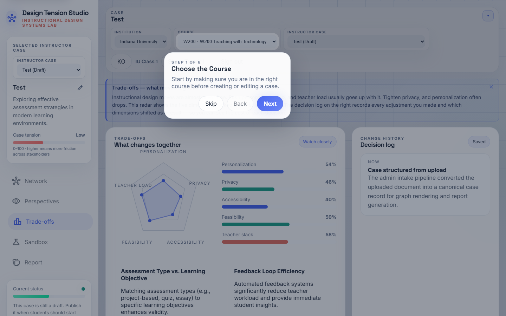
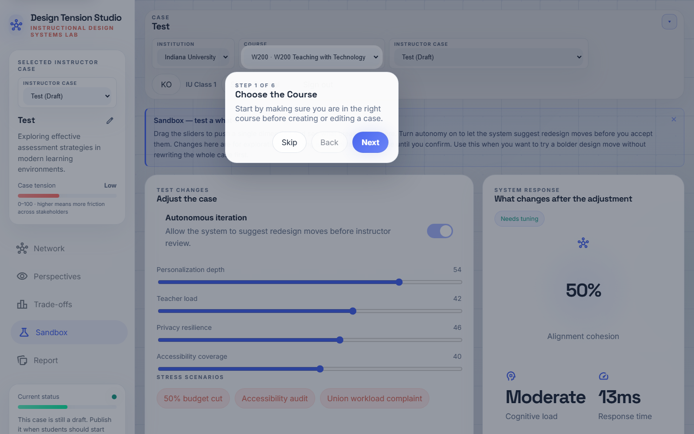
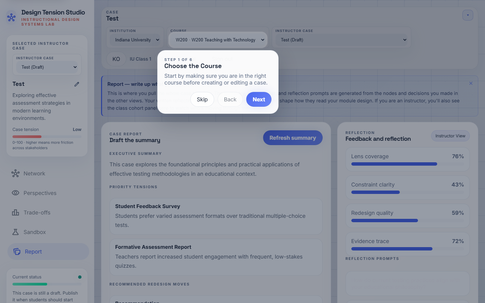

A step-by-step walkthrough for instructors preparing Swarm_ID for an instructional-design class. Each step shows what you will see, what to click, and what the underlying mechanic is doing in the background.
What makes Swarm_ID different. When a student asks a question,
Swarm_ID does not call an LLM once. It launches a swarm round —
five stakeholder agents (teacher, student, IT, administrator,
accessibility) answer the same question in parallel. A second pass
classifies every pair of answers as agree / disagree / tangential
and draws the result onto the network. Students see pluralism, conflict,
and convergence at a glance, then can "Challenge" any single lens to
push for a refined second-round response. Every node on the map carries
a provenance badge (AI,Me,Peer,Brief) so the class never
loses track of who wrote what.
Step 1 · Sign in

Open https://swarmid.vercel.app and sign in with your instructor account (Supabase-backed). If you do not have an account yet, ask your platform admin to create one — self-signup is disabled on purpose so course data stays inside the institution.
What the system is doing: authenticating you against Supabase and hydrating your institution + course context. Locally cached state (recent cases, tutorial progress) is also restored from localStorage.
Step 2 · Studio landing
You land on the Case Network view in the Studio. The left sidebar shows navigation (Network · Perspectives · Trade-offs · Sandbox · Report) and the Current status health panel. The canvas center holds the D3 force-directed map. The right sidebar shows your Selected lens and Swarm activity feed.
Tip. The pill next to "Swarm activity" now reads cycle N · round M. cycle counts graph re-renders; round counts genuine multi-agent turns. After a class run, round should be well above zero — that is your proof the students engaged the swarm.
Step 3 · Review the case library

Scroll the Start here (intake) panel to see the Course cases list. Each card shows title, summary, draft/published state, and Open / Publish buttons. Cards with Published are visible to your students; Draft cases are instructor-only.
Housekeeping: If students complain they cannot find a case, the most common cause is that it is still in Draft. One click on Publish fixes it.
Step 4 · Open a case

Click Open case on the one you want to use in class (e.g. Online Digital Literacy Module for 5th Graders). The canvas re-renders with:
- A central core node carrying the case title.
- Stakeholder nodes (Teacher, Student, IT, Administrator, Accessibility)
orbiting the core.
- Signal nodes (goals, constraints, evidence) connected to the
relevant stakeholders.
Every major node carries a small provenance badge in its top-right corner — Brief means the node came from the uploaded case brief.
Step 5 · Upload / structure a new brief

If you need a new case for this class session, paste the brief into the Paste the case brief textarea in the intake panel and hit Structure the case. The system calls Gemini to extract goals, constraints, stakeholders, and seed evidence into the case record and drops the result in the case list as a Draft.
Pedagogical note. Brief quality directly shapes swarm quality. Include: target audience, learning objectives (ADDIE / 5E friendly language works well), constraints (time, tools, policies, workload), and at least one known tension (e.g. "authorship policy vs AI-assisted drafting"). The more tension you encode, the richer the disagreement edges the swarm will draw.
Step 6 · Board settings
Open Settings to configure the cohort board. Key knobs:
- Max learner nodes — caps how many agenda nodes a single student
can add to their personal map.
- Max AI expansions per node — caps how many follow-ups Gemini can
auto-generate under any one student node.
- Governance gate / Accessibility gate — optional review gates
before learners can publish a decision.
Defaults are safe for a 30-student section. Lower these if you want a tighter, more deliberate class.
Step 7 · Perspectives

Click Perspectives in the left nav. You now see a per-stakeholder digest of top conflicts, with quantitative tension scores. This is the best view to use in a lecture to walk through "what each lens is worried about" before the class runs their own swarm rounds.
Classroom prompt: "If the Teacher score is 74 and the Student score is 58, which stakeholder is currently carrying more load, and why do the constraints make that so?"
Step 8 · Trade-offs

The Trade-offs view shows a radar (personalization / privacy / accessibility / feasibility / teacher slack) and bar charts. The Matrix state label flags Needs attention, Watch closely, or Balanced.
Use this view as the checkpoint between activity phases. "Where is conflict spiking?" is a good sensemaking prompt for the whole cohort.
Step 9 · Sandbox

Sandbox lets you apply preset scenarios — budget, accessibility, workload — and watch how the metrics redistribute. You can also toggle autonomous iteration to let the system keep shuffling conflicts until it settles.
This is the best view for "what if" exercises: apply a scenario, let students predict where tension will land, reveal, discuss.
Step 10 · Report & export

Report assembles decisions, evidence, and memos into a shareable summary. Use Download PNG to grab the network as an image for a slide; Download HTML gives a standalone snapshot students can keep.
After class. Peek at Swarm activity — the round counter tells you whether the cohort genuinely engaged the 5-agent swarm or just browsed. A class that produced 30+ rounds across 30 students is engaged; one with only 5 rounds likely needs more explicit prompting.
Troubleshooting
| Symptom | Likely cause | Fix |
|---|---|---|
| Students can't see a case | Case is Draft | Click Publish on the card |
| Network feels empty even after questions | Students didn't submit, or Gemini key not set | Check /api/gemini logs in Vercel |
| Disagreement edges never appear | Second Gemini pass failed silently | Open browser console — look for classifySwarmEdges warnings |
| Korean / English mixed in UI | Locale toggle mid-render | Click the locale button twice to force a full re-render |
| Left sidebar content cut off | Viewport height too small | Sidebar scrolls independently — drag the inner content |
Quick preflight before class
- All case cards you need are Published.
- Board settings set (Max learner nodes ≥ 6 for a 50-min session).
- You have opened the class case yourself at least once (this warms the
cache and catches Gemini quota issues).
- Your projector / screen share window shows the Network view at full
width — collapse both side panels via the chevrons so the map fills the canvas when demonstrating.
- Review the Student guide (
student-en.md/student-ko.md) so you
know exactly what your class will see.